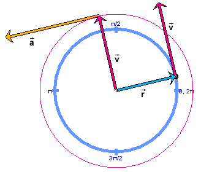

Answer. Equ.(1) on Page 3 gave the following relation between the magnitudes v and r of the vectors in Pair 1:
v = r w . (1)
(1)
We now must consider the corresponding relation between the magnitudes a and v of the vectors in Pair 2. Replacing v by a on the left-hand side and r by v on the right-hand side gives
a = v w . (4)
(4)
Equ.(4) is true when the trace of the vector  is a circle, as in the image above.
This is true as long as v is constant. Therefore, Equ.(4)
holds for uniform circular motion only. (See Page 6 for a
generalization of Equ.(4) to non-uniform circular motion and even
non-circular motion.)
is a circle, as in the image above.
This is true as long as v is constant. Therefore, Equ.(4)
holds for uniform circular motion only. (See Page 6 for a
generalization of Equ.(4) to non-uniform circular motion and even
non-circular motion.)
Task. From Equ.(4), one can derive two more expressions for a if one uses Equ.(1) to either replace v or w in Equ.(4). Make these substitutions and compare your results with the answers below.
Answer. Replacing v gives
a = (r w) w = r w2 . (5)
(5)
Replacing w gives
a = v (v/r) = v2 / r . (6)
(6)
These are the two expressions for the magnitude of the radial acceleration in circular motion listed on Page 1.
Task. Calculate the magnitude of the acceleration of a particle moving in a circle of radius r = 0.20 m with constant speed v = 0.25 m/s. Check your answer with the applet on Page 5. Repeat the calculation for several more settings of the radius and speed or angular speed. Display the acceleration vector, and observe its magnitude visually.